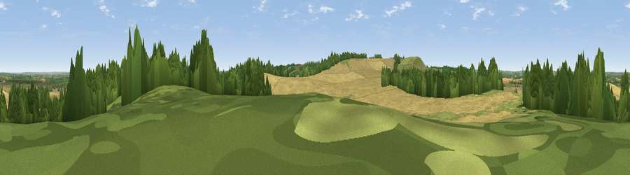

Viewpoint near Pirton
#32949 in England · top 51% of its area beats it · near PirtonThe view, rendered

A 360° render of this exact spot computed from the terrain model, tree cover and land cover — summer colours, afternoon light, calibrated against photographs of famous viewpoints. Real trees, hedges and buildings will differ in detail.
The panorama
Grey silhouette: terrain skyline in each direction (720 bearings, Earth curvature and refraction included). Dashed green: skyline with trees (+15 m) and buildings (+8 m) as obstacles. Blue strip: how far the ground is visible on each bearing.
Where the view opens
Wedge length = distance to the farthest visible ground on that bearing (vegetation-aware). Rings at 10, 25 and 50 km.
What fills the view
61% cropland · 20% woodland · 18% grassland ·
Angular shares of the visible panorama (visual magnitude), not map area. Landscape diversity 0.42 (0–1 Shannon).
Key numbers
More beautiful places nearby
The staircase of upgrades: each row has a higher view potential than everything closer. Driving times are estimates from straight-line distance, calibrated against real road routing — check an actual route before setting out.
| Place | Direction | Drive | Score |
|---|---|---|---|
| Viewpoint near Pirton | NNW · 1 km | ~2 min | 52.8 |
| Viewpoint near Great Offley | SSW · 1 km | ~3 min | 54.4 |
| Viewpoint near Hexton | WSW · 1 km | ~4 min | 65.4 |
| Viewpoint near Church End | SW · 16 km | ~28 min | 65.8 |
| Beacon Hill | SW · 22 km | ~37 min | 74.1 |
| Viewpoint near Halton | SW · 32 km | ~50 min | 74.3 |
| Coombe Hill Monument | SW · 37 km | ~56 min | 75.5 |
| Viewpoint near Woolstone | WSW · 94 km | ~119 min | 76.7 |
51.96072, -0.34846 · source: screening · position refined by local search. Computed location — check access rights before visiting.